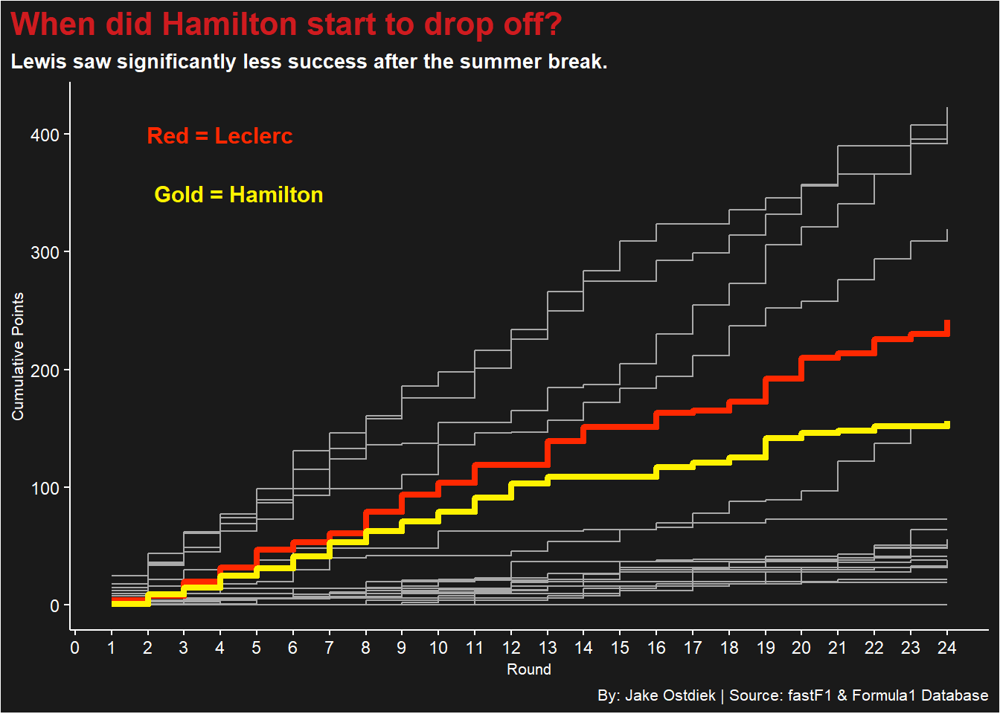
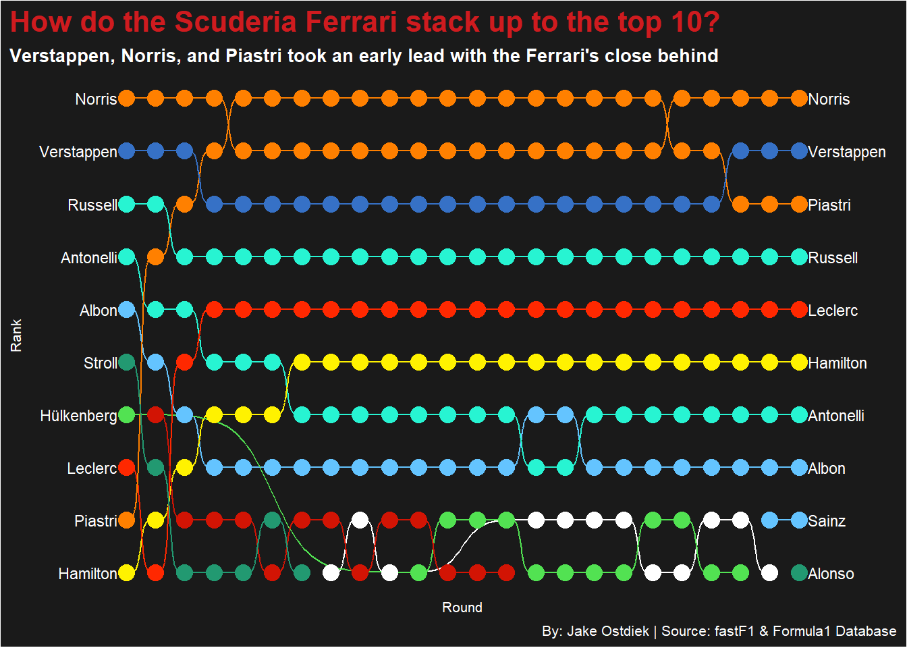
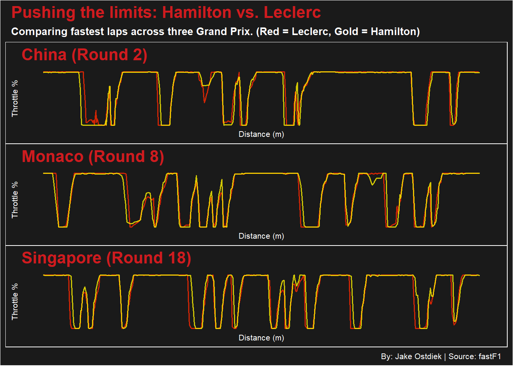

Lewis Hamilton is Not Past his Prime - What the 2025 and 2026 Data Reveals
f1
lewishamilton
charlesleclerc
Author
Jake Ostdiek
Published
April 26, 2026
When seven-time World Champion Lewis Hamilton announced his time with Mercedes was over, many thought he would retire. Instead, he made a bold decision to join Scuderia Ferrari for the 2025 season and beyond. While the general public was initially astounded, the tifosi, Ferrari’s very own fanbase, could not have been happier with the excitement. However, after a full season in red, one question remained. Is Lewis Hamilton truly past his prime, or is the data telling a different story?
Looking at the 2025 season as a whole, the battle between teammates Lewis Hamilton and Charles Leclerc was one of the most watched stories on the grid.
Code
library(f1dataR)library(tidyverse)library(patchwork)library(ggrepel)library(ggbump)library(gt)# loaded in and saved from pythonfull_race_data <-read_csv("data/2025_results.csv")all_race_data <- full_race_data |>select(driver_id, round, points, session)# loaded in and saved from pythonsprint_results_raw <-read_csv("data/sprints_results_clean.csv")driver_info <-load_drivers(season =2025)driver_mapping <- driver_info |>select(driver_id, given_name, family_name, number ="permanent_number") |>mutate(number =as.numeric(number),number =case_when( given_name =="Max"~"1", given_name =="Lando"~"4",TRUE~as.character(number) ) ) |>filter(!is.na(number)) |>distinct()sprint_data_clean <- sprint_results_raw |>pivot_longer(cols =-c(Team, Entrant, Constructor, Car, Engine, Driver, `No.`),names_to ="round_name",values_to ="points_info" ) |>mutate(round =as.integer(round_name),points =as.numeric(points_info),session ="Sprint",number =as.character(`No.`) ) |>filter(!is.na(points)) |>left_join(driver_mapping, by ="number") |>filter(!is.na(driver_id)) |>select(driver_id, round, points, session)all_points_data <-bind_rows(all_race_data, sprint_data_clean)weekend_totals <- all_points_data |>group_by(driver_id, round) |>summarize(weekend_points =sum(points, na.rm =TRUE),.groups ="drop" ) |>arrange(round, desc(weekend_points)) |>left_join( driver_mapping |>select(driver_id, family_name), by ="driver_id")cumulative_points <- weekend_totals |>group_by(driver_id) |>mutate(cumulative_points =cumsum(weekend_points) ) |>ungroup()# charles leclercleclerc_step <- cumulative_points |>filter(driver_id =="leclerc")# lewis hamiltonhamilton_step <- cumulative_points |>filter(driver_id =="hamilton")# color code #FF2800 for ferrari red# color code #FFF200 for ferrari goldggplot() +geom_step(data = cumulative_points, aes(x = round, y = cumulative_points, group = family_name), color ="darkgrey") +geom_step(data = leclerc_step, aes(x = round, y = cumulative_points), color ="#FF2800", linewidth =1.5) +geom_step(data = hamilton_step,aes(x = round, y = cumulative_points), color ="#FFF200", linewidth =1.5) +scale_x_continuous(breaks =c(0, 1, 2, 3, 4, 5, 6, 7, 8, 9, 10, 11, 12, 13, 14, 15, 16, 17, 18, 19, 20, 21, 22, 23, 24)) +theme_dark_f1(axis_marks =TRUE) +annotate("text", x =4, y =400, label ="Red = Leclerc", color ="#FF2800", fontface ="bold", size =4 ) +annotate("text", x =4.5, y =350, label ="Gold = Hamilton", color ="#FFF200", fontface ="bold", size =4 ) +labs(title ="When did Hamilton start to drop off?",subtitle ="Lewis saw significantly less success after the summer break.",x ="Round",y ="Cumulative Points",caption ="By: Jake Ostdiek | Source: fastF1 & Formula1 Database" ) +theme(plot.title =element_text(size =16, face ="bold"),axis.title =element_text(size =8),plot.subtitle =element_text(size =10),panel.grid.minor =element_blank(),plot.title.position ="plot")

By the end of the season, Charles Leclerc secured 5th in the championship standings with 242 points, while Hamilton followed in 6th with 156 points. As shown in the cumulative points step chart, Hamilton’s success hit a substantial plateau after the summer break which takes place right after round 14. While he kept pace early on, the gap to Leclerc widened as Leclerc found a more consistent rhythm in the SF-25.
The 2025 car for the Scuderia was nowhere near the expectations of the fans and the team itself, but Hamilton was unable to draw enough performance out of it as Leclerc did. Even when being at the back of the front-runners, doubt was cast in his direction due to his difficulties in performance.
The 2025 championship was an extremely tough contest at the top, with McLaren and Red Bull’s Max Verstappen setting the early pace. Closing in on the top spots, Mercedes’ George Russell found great consistency in the Mercedes-AMG F1 W16 E while Leclerc and Hamilton worked their way up the rankings over the first few weeks.
Code
# get round by round rankschampionship_rank <- cumulative_points |>group_by(round) |>arrange(round, desc(cumulative_points)) |>mutate(rank =row_number()) |>ungroup() |>filter(rank <=10)rank_labels <- championship_rank |>filter(round ==max(round))ggplot() +geom_bump(data = championship_rank,aes(x = round,y = rank,color = family_name )) +geom_point(data = championship_rank,aes(x = round,y = rank,color = family_name),size =4 ) +geom_text(data = championship_rank |>filter(round ==min(round)),aes(x = round - .3,y = rank,label = family_name),size =3,hjust =1,color ="white") +geom_text(data = championship_rank |>filter(round ==max(round)),aes(x = round + .3,y = rank,label = family_name),size =3,hjust =0,color ="white") +scale_color_manual(values =c("Leclerc"="#FF2800", # Ferrari red"Hamilton"="#FFF200", # Ferrari gold"Verstappen"="#3671C6", # Red Bull blue"Norris"="#FF8000", # Mclaren orange"Piastri"="#FF8000","Russell"="#27F4D2", # Mercedes teal"Antonelli"="#27F4D2","Alonso"="#229971", # Aston Martin green"Stroll"="#229971","Sainz"="#64C4FF", # Williams blue"Albon"="#64C4FF","Hülkenberg"="#52E252", # Sauber green"Ocon"="#D21404", # darker red Haas "Hadjar"="white"# Racing Bulls white ) ) +scale_x_continuous(breaks =c(1, 2, 3, 4, 5, 6, 7, 8, 9, 10, 11, 12, 13, 14, 15, 16, 17, 18, 19, 20, 21, 22, 23, 24),limits =c(-1, 26) ) +scale_y_reverse(breaks =c(1, 2, 3, 4, 5, 6, 7, 8, 9, 10) ) +theme_dark_f1() +labs(title ="How do the Scuderia Ferrari stack up to the top 10?",subtitle ="Verstappen, Norris, and Piastri took an early lead with the Ferrari's close behind",x ="Round",y ="Rank",caption ="By: Jake Ostdiek | Source: fastF1 & Formula1 Database" ) +theme(legend.position ="none",plot.title =element_text(size =16, face ="bold"),axis.title =element_text(size =8),plot.subtitle =element_text(size =10),panel.grid.minor =element_blank(),plot.title.position ="plot")

As the season continued on, the Ferrari’s were often caught in the early battles between the normal midfield teams like Aston Martin, Kick Sauber, and Williams. Drivers like Alex Albon and Nico Hulkenberg surprised many in the F1 world with impressive starts, making Hamilton’s initial climb in the rankings much more difficult.
To look further into just how much success both drivers saw, we can look at how often Charles and Lewis converted a solid weekend into a successful finish.
Both drivers were remarkably consistent in bringing the car home in the points. Hamilton secured 19 Top 10 finishes compared to Leclerc’s 20. This shows that both of these experienced racers know how to navigate the SF-25 through some of the world’s most difficult circuits.
This was definitely a positive for the Scuderia, but the issue lies when taking a look at the Top 5 finishes. Leclerc managed to reach the top five in 14 races, while Hamilton achieved this only 6 times. While Hamilton’s finishing was more inconsistent relative to the very front of the grid, he still remained a solid role player for Ferrari with a multitude of points finishing.
This then raises the question, is it decline in skill, or simply the time required to become attuned to the Ferrari power unit after 12 years with Mercedes?
To understand the “why” behind these issues, we have to look further than the finishing positions and into the real telemetry of the SF-25. By comparing the fastest laps of Hamilton and Leclerc across three different circuits, China (Round 2), Monaco (Round 8), and Singapore (Round 18), we get a closer look at each drivers’ driving styles.
Code
china <-read_csv("data/telemetry_2025_China_R.csv")ham_china <- china |>filter(Driver =="HAM")lec_china <- china |>filter(Driver =="LEC")china1 <-ggplot() +geom_line(data = lec_china,aes(x = Distance, y = Throttle), color ="#FF2800", linewidth =0.7, alpha =0.8 ) +geom_line(data = ham_china,aes(x = Distance, y = Throttle), color ="#FFF200", linewidth =0.7, alpha =0.8 ) +theme_dark_f1(axis_marks =TRUE) +labs(title ="China (Round 2)",x ="Distance (m)",y ="Throttle %" ) +theme(plot.title =element_text(size =16, face ="bold"),axis.title =element_text(size =8),plot.subtitle =element_text(size =10),panel.grid.minor =element_blank(),plot.title.position ="plot")monaco <-read_csv("data/telemetry_2025_Monaco_R.csv")ham_monaco <- monaco |>filter(Driver =="HAM")lec_monaco <- monaco |>filter(Driver =="LEC")monaco1 <-ggplot() +geom_line(data = lec_monaco,aes(x = Distance, y = Throttle), color ="#FF2800", linewidth =0.7, alpha =0.8 ) +geom_line(data = ham_monaco,aes(x = Distance, y = Throttle), color ="#FFF200", linewidth =0.7, alpha =0.8 ) +theme_dark_f1(axis_marks =TRUE) +labs(title ="Monaco (Round 8)",x ="Distance (m)",y ="Throttle %" ) +theme(plot.title =element_text(size =16, face ="bold"),axis.title =element_text(size =8),plot.subtitle =element_text(size =10),panel.grid.minor =element_blank(),plot.title.position ="plot")singapore <-read_csv("data/telemetry_2025_Singapore_R.csv")ham_singapore <- singapore |>filter(Driver =="HAM")lec_singapore <- singapore |>filter(Driver =="LEC")singapore1 <-ggplot() +geom_line(data = lec_singapore,aes(x = Distance, y = Throttle), color ="#FF2800", linewidth =0.7, alpha =0.8 ) +geom_line(data = ham_singapore,aes(x = Distance, y = Throttle), color ="#FFF200", linewidth =0.7, alpha =0.8 ) +theme_dark_f1(axis_marks =TRUE) +labs(title ="Singapore (Round 18)",x ="Distance (m)",y ="Throttle %" ) +theme(plot.title =element_text(size =16, face ="bold"),axis.title =element_text(size =8),plot.subtitle =element_text(size =10),panel.grid.minor =element_blank(),plot.title.position ="plot")(china1 / monaco1 / singapore1) +plot_annotation(title ="Pushing the limits: Hamilton vs. Leclerc",subtitle ="Comparing fastest laps across three Grand Prix. (Red = Leclerc, Gold = Hamilton)",caption ="By: Jake Ostdiek | Source: fastF1" ) &theme_dark_f1() &theme(plot.title =element_text(size =16, face ="bold"),axis.title =element_text(size =8), plot.subtitle =element_text(size=10), panel.grid.minor =element_blank())

In China, Hamilton was still getting used to the feel of the Ferrari car. His throttle traces match Leclerc’s aggressive patterns in and out of the long corners. Leclerc’s edge can be seen into turn 1, turn 5, and turn 7. When Leclerc’s throttle drops later than Hamilton, he is carrying more speed into that corner, and we can see in many cases, his throttle rises earlier than Hamilton’s, or he gains speed quicker out of the exit.
Monaco is well known as the grand prix of confidence and precision. In a street circuit where drivers dance within the barriers, we can see more of a deviation between the Ferrari drivers. Leclerc’s red peaks are occasionally sharper than Hamilton’s, showing ease and comfort in the car when he is able to make split second changes to the car’s trajectory. As the team grew closer to the mid season, we can see Leclerc slowly having a higher level of trust in the stability of the SF-25.
In Singapore, we can see Hamilton began to grow more comfortable with the car, carrying more speed than Leclerc into various corners like turn 1 and turn 4. As mentioned earlier, Hamilton’s finishing success did hit a slight wall after the summer break. So even with his comfort in the SF-25 growing throughout the season, he was still unable to extract the full performance he might have wished for. This is evident especially in Singapore since Hamilton actually set the fastest lap of the race, but only brought home 4 points in 8th place.
If a 41-year-old driver can overlay his fastest lap throttle chart onto Charles Leclerc’s across three of the most demanding circuits in the world, he is not past his prime. He was simply finding his way through the transition period that a lesser driver might not make it out of. The 2025 data shows a driver who is still pushing the absolute limits of the car. The gap to Leclerc was real, but it appears to be a matter of conversion, rather than loss of speed or skill.
Sneaking ahead to the start of the 2026 season, Lewis Hamilton, along with Charles Leclerc and the rest of the Scuderia, could not be more pleased.
Code
current_season <-load_standings(season =get_current_season(), type ="driver")names <- cumulative_points |>distinct(driver_id, family_name)current_standings <- current_season |>left_join(names, by ="driver_id") |>select(family_name, points) |>head(10)current_standings |>gt() |>cols_label(family_name ="Driver",points ="Championship Points" ) |>tab_header(title ="How has Hamilton performed three races into the 2026 season?",subtitle ="Ferrari's powerful chassis has helped them gain ground behind Mercedes' dominant power unit." ) |>tab_style(style =cell_text(color ="black", weight ="bold", align ="left"),locations =cells_title("title") ) |>tab_style(style =cell_text(color ="black", weight ="bold", align ="left"),locations =cells_title("subtitle") ) |>tab_style(style =cell_fill(color ="#FF2800", alpha =0.7),locations =cells_body(row = (family_name =="Leclerc")) ) |>tab_style(style =cell_fill(color ="#FFF200", alpha =0.7),locations =cells_body(row = (family_name =="Hamilton")) ) |>tab_source_note(source_note =md("**By:** Jake Ostdiek | **Source:** fastF1 & FormulaOne Database") ) |>tab_style(locations =cells_column_labels(columns =everything()),style =list(cell_borders(sides ="bottom", weight =px(3)),cell_text(weight ="bold", size=15) ) )
How has Hamilton performed three races into the 2026 season?
Ferrari's powerful chassis has helped them gain ground behind Mercedes' dominant power unit.
With the 2026 season, the FIA introduced a multitude of new regulations, including smaller, lighter, and more agile cars, more active aerodynamics, and most importantly, a 50 to 50 hybrid power split between the combustion engine and the electric engine power unit. Coincidentally, the new emphasis on power unit performance has been the most controversial, causing issues like maintaining speed down straights and new, sometimes unpredictable, erratic driving styles due to drivers harvesting and deploying battery power.
While all teams have had to adapt to these new regulations, teams like Mercedes and Scuderia Ferrari have shown to be the top contenders now that we are three races into the season. Mercedes new power unit has the grid in a tight grip, having the fastest flat-out speeds on the straights, explaining how Antonelli and Russell are topping the leaderboard so far. Ferrari on the other hand do not have the best power unit, but where they excel is in their chassis and race starts, which often leads to either Lewis or Charles leading the race by the end of the first lap. Their improved chassis has also given them the fastest speed in corners, all around helping them climb to number 3 and 4 on the leaderboard.
Although only three races into the season, and with the advantages provided by the SF-26, it is easy to answer my initial question. Not only is Lewis Hamilton not past his prime, he is driving like the 22-year-old rookie driver in 2007 that joined McLaren to finish T-2nd in the championship. He is finding gaps, pushing on the straights, and declaring fights with any and every driver that challenges him during races.